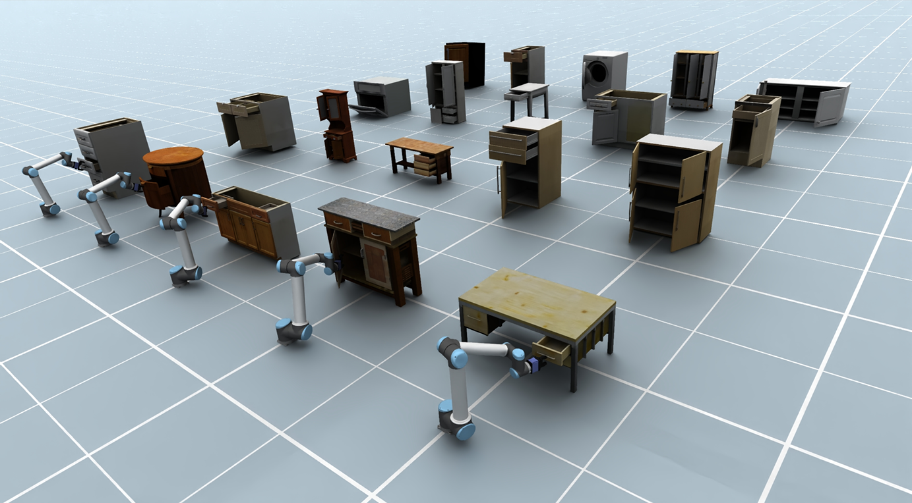
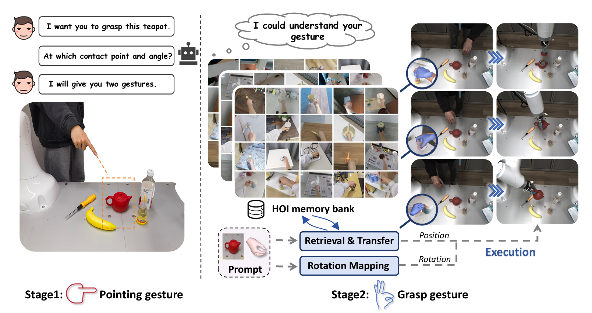

01 / Research Direction
Embodied Intelligence
Building agents that can perceive, plan, and act reliably in the physical world.
Biography
I am a second-year M.Phil. student in Computer Science at The Chinese University of Hong Kong, Shenzhen (CUHK-SZ), supervised by Prof. Kui Jia. I received my B.E. in Robotics Engineering from Zhejiang University (2021 - 2025), under the Chu Kochen Honors College and the College of Control Science and Engineering. During my undergraduate studies, I worked as a research intern at APRIL Lab.
My research interests lie in enabling embodied agents to perceive, reason about and interact with the physical world. I am also interested in the data generation pipelines, computer graphics, and generative modeling techniques needed to train such agents.
01 / Research Direction
Building agents that can perceive, plan, and act reliably in the physical world.
02 / Research Direction
Developing data and world models that broaden what embodied agents can learn from.
03 / Research Direction
Building reliable data generation and generative simulation for embodied agents.
Updates
PAct: Part-Decomposed Single-View Articulated Object Generation was accepted to ACM SIGGRAPH Asia 2026.
Research Experience
2026.08 - Present
Embodied AI Research Intern
2025.08 - Present
M.Phil. Student
2024.09 - 2025.06
Research Intern
2024.03 - 2024.08
Research Intern
Academic Background
2025 - 2027
The Chinese University of Hong Kong, Shenzhen
2021 - 2025
Zhejiang University
Selected work
02 records

ACM SIGGRAPH Asia 2026
Read on arXiv
IEEE/RSJ International Conference on Intelligent Robots and Systems (IROS)
Read on arXiv